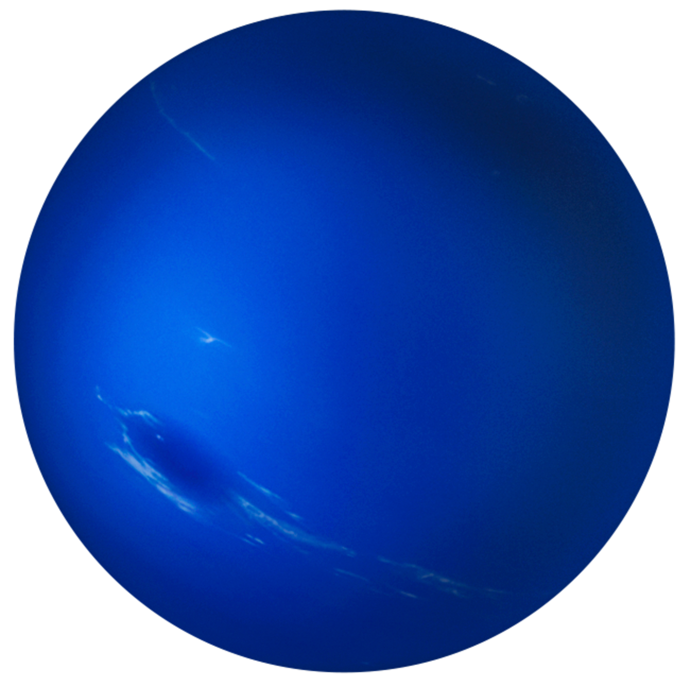

The Coolest Planets Ever

|
 |

|

|
|
|---|---|---|---|---|
| Names | Saturn | Neptune | Mars | Jupiter |
| Mass (kg) | 5.69 x 1026 | 1.02 x 1026 | 6.42 x 1023 | 1.90 x 1027 |
| Diameter (km) | 120660 | 49528 | 6787 | 142800 |
| Mean Density (kg/m3) | 690 | 1640 | 3940 | 1314 |
| Escape Velocity (m/s) | 35600 | 23300 | 5000 | 59500 |
| Average Distance from Sun (km) | 9.537 AU (1,426,725,400 km) | 30.07 AU (4,498,252,900 km) | 1.524 AU (227,936,640 km) | 5.203 AU (778,412,020 km) |
| Rotation Period | 29.46 Earth Days | 0.67 (19.1 hours) | 1.026 Earth Days | 9.8 Earth Hours |
| Revolution Period | 29.46 Earth days in a Year | 60,190 Earth days in a Year | 686.98 Earth days in a Year | 11.86 Earth days in a Year |